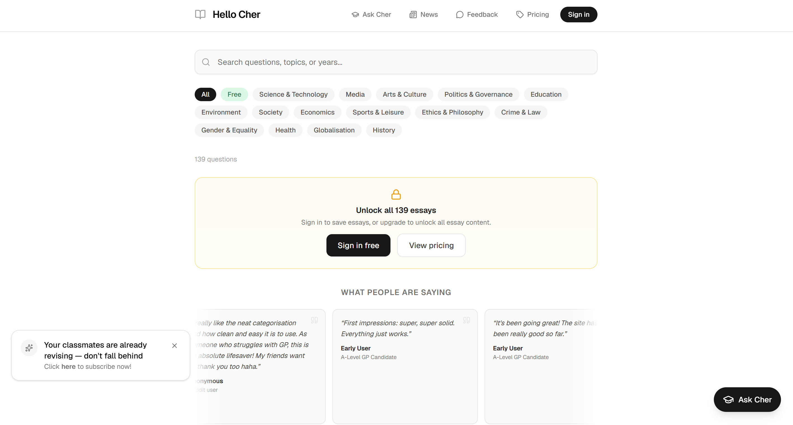
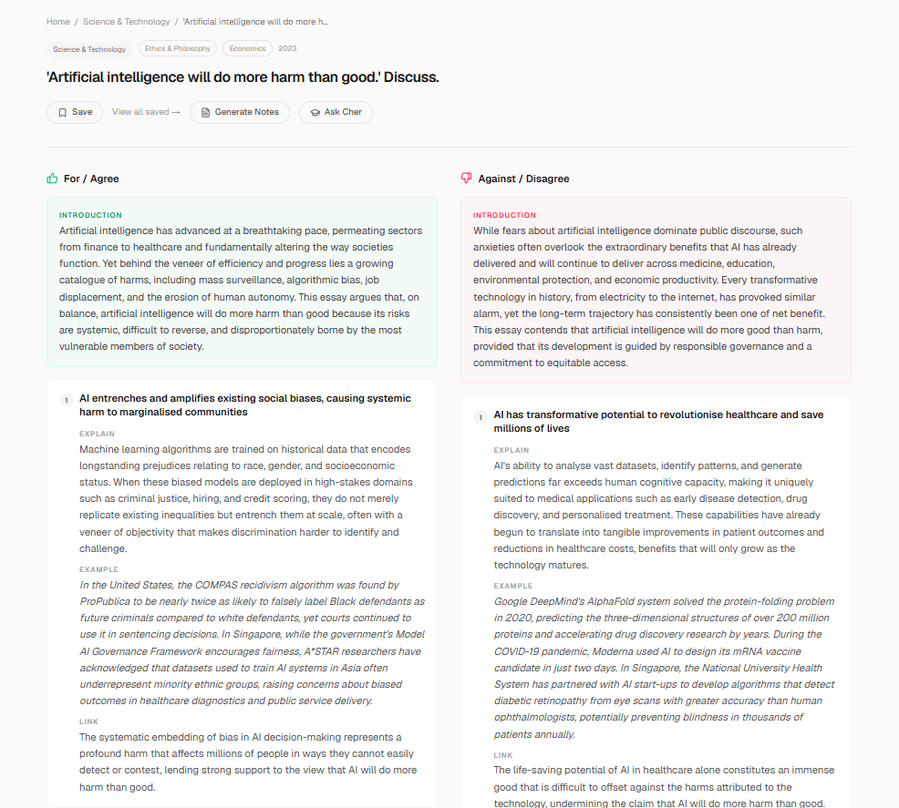
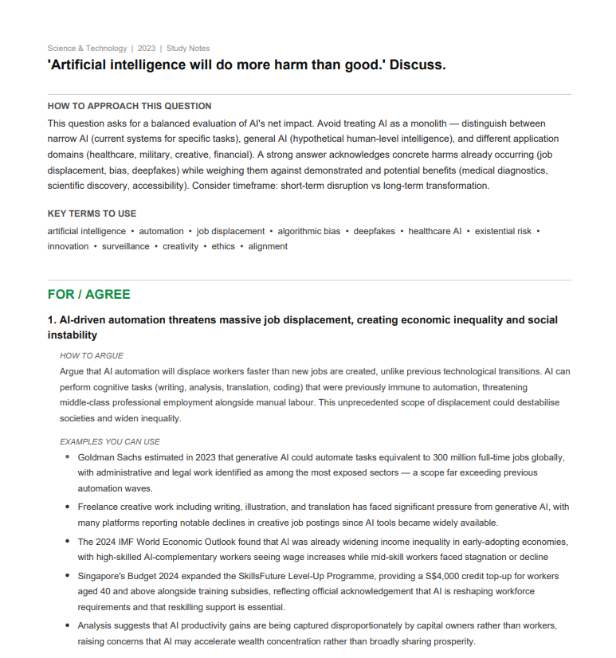
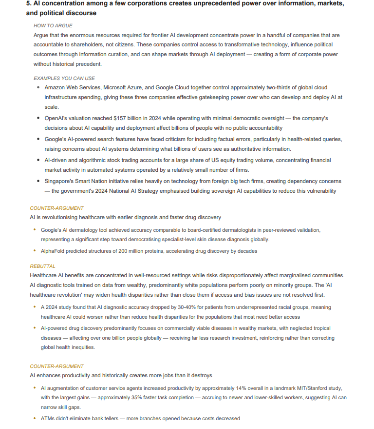
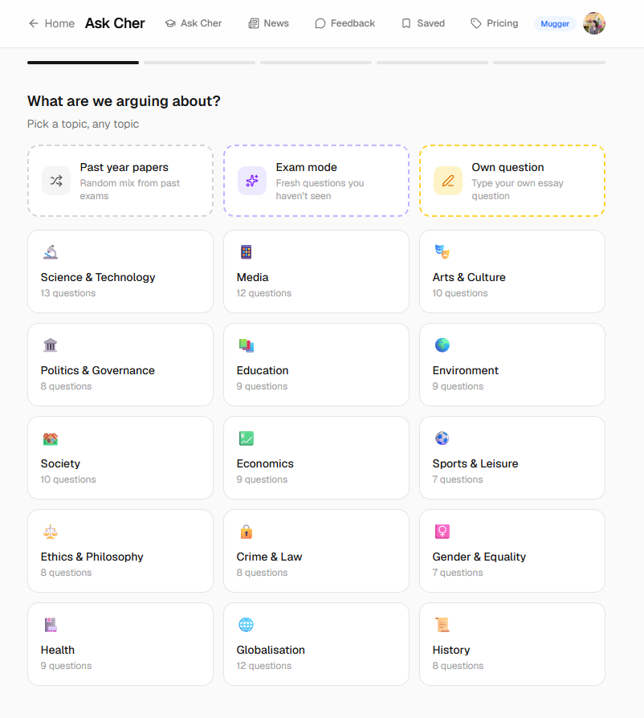
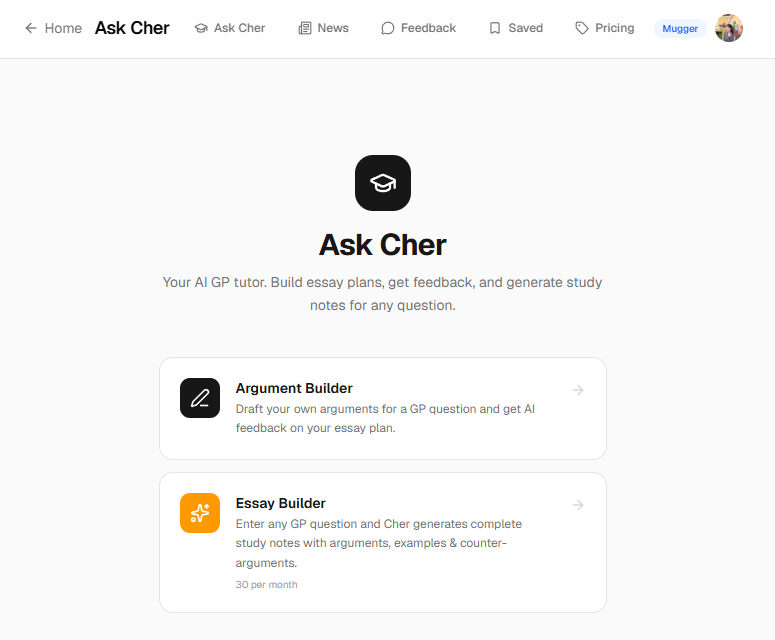
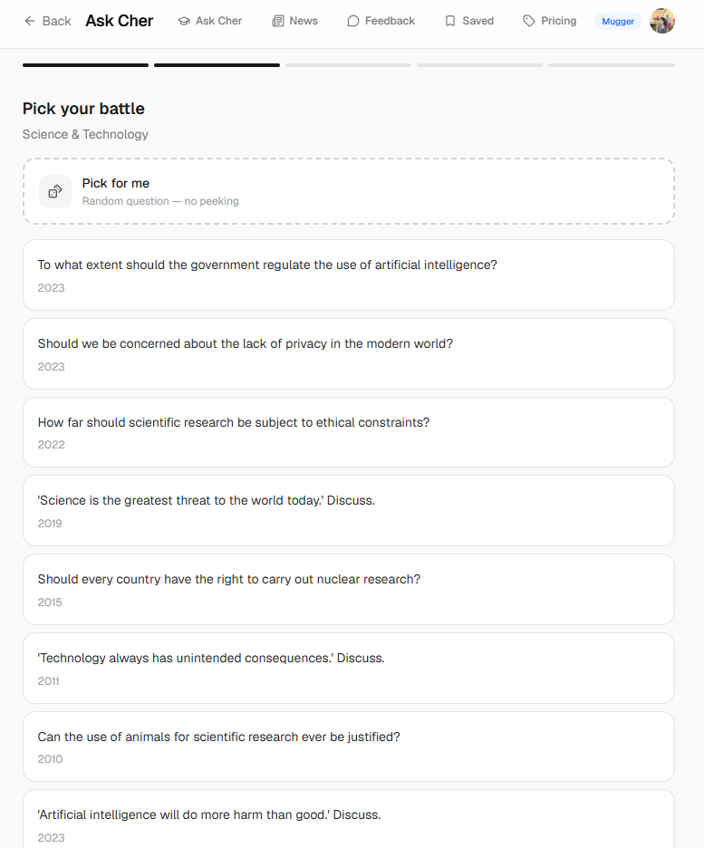
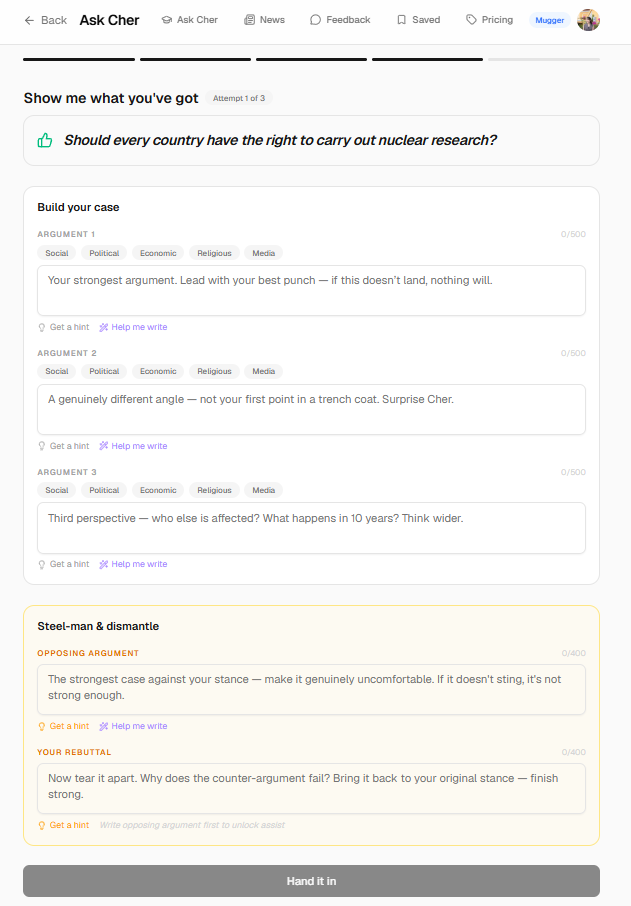
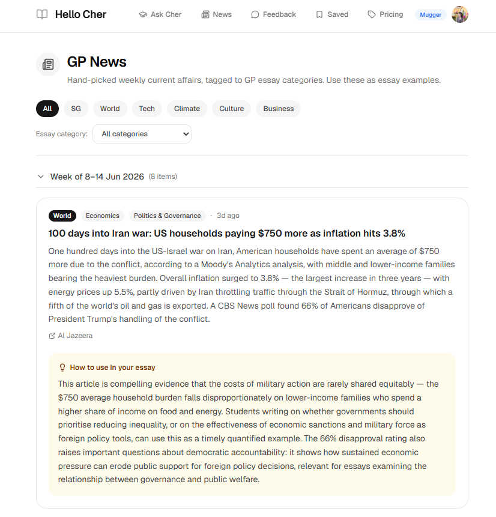

An AI study platform for Singapore A-Level General Paper (GP) students.
I owned the user research and UX/UI, ran the launch, and did the user outreach myself, talking to students one by one. What we built and what we charged for, TC and I worked out together off the back of those conversations, and TC, a software engineer, did the building.

GP is one of the hardest subjects to study for, and not because the content is dense. There is no clean right answer, so a student writes an essay, hands it in, and waits a week for a grade and a few margin notes that do not actually tell them what to fix. The feedback loop is slow and scarce, and it all bottlenecks on one tutor who does not have time to mark everything.
It gets worse from there. A strong GP essay leans on a wide bank of real-world examples, which means students are also meant to keep up with the news. Most of them rank GP last against subjects that feel more scoreable, so that reading never happens.
So the gap was twofold: students could not get fast feedback on their own writing, and they could not easily build the example bank a good essay needs.
Singapore JC students sitting GP, mostly studying alone and under exam pressure. A few things surfaced fast once I started talking to them. They do not get enough practice, and even when they want to practise, their teachers do not have the time to mark it. They know examples matter but struggle to gather enough of them. And they deprioritise GP, so the news reading that would feed those examples almost never gets done.
I did not start with the obvious feedback feature. I started with the cheapest thing that could be useful and let the users pull the rest of the roadmap.
We launched with a library of model essays built from ten years of past papers, prelim questions, and A-Level questions. It cost us very little to put up and gave students something useful on day one. Then I went back to the students who showed up and asked what they actually valued. The answer was not only the content, it was the formatting. The essays were broken into clean, readable paragraphs with the different stances laid out clearly, counterarguments flagged, and each paragraph tagged by the job it was doing, whether that was to explain, to give an example, or to link back to the question. Students could see how an argument is actually built, and several told me they were picking up brand new examples just from reading.

A sample essay, broken into tagged, structured arguments — students said the formatting taught them as much as the content.
Good GP essays run on a deep bank of examples, and students wanted more than any single essay could hold. So we built a generator that produces around thirty extra examples on top of a given essay, in point form, each with a note on how it can be used.


More conversations made the real bottleneck obvious. Students were not practising enough, and there was no one with time to mark what they did write. So we shipped instant feedback, where a student puts in their own arguments and gets a response straight away, and can keep practising without waiting on a teacher.




The full Ask Cher flow — pick a topic, pick a question, build your case, get feedback. Each step was scoped tight so a student could finish a practice round in one sitting.
Students told me they never get round to reading the news and always put GP last. So we built a page that pulls current affairs and shows which essay types each story can support, giving them fresh material the notes generator would not already cover.

The thread running through all of it is that I shipped the smallest useful thing first, then let each round of user conversations decide what came next, instead of building the whole vision up front and hoping it landed.
We launched the product for free and shared it once on Reddit. That single post brought in 800+ students with no ad spend, and we reached ~1,100 unique visitors in the first three weeks.
There wasn't a big "distribution strategy" — we just tried one channel to see if anyone cared. The response proved the problem was real and common, which gave me the confidence to start testing whether students would pay for it.
We launched fully free on purpose. The first thing I wanted to know was whether other students struggled with GP the way we had, and the Reddit response made it clear they did. But a problem being common is not the same as a problem being urgent, so I introduced pricing to tell the difference between a hair-on-fire problem people pay to fix and a nice-to-have they will use only while it is free.
The line was drawn so a student could feel the value of every tool before hitting a wall, and so the wall fell exactly where casual use turns into real reliance.
Plenty of students asked us to cover History and Geography. GP is the one subject nearly every JC student takes, which made it the widest problem we could solve well. Spreading across other subjects would have traded a sharp, universal product for a thin and scattered one before we had even nailed GP.
Students asked for essays laid out to be easily memorised. I kept the sample essays as something to learn from rather than reproduce — the point was to show how an argument is constructed, not to hand a student something to recite.
— A paying user, on a use case I hadn't anticipated.
We launched free and kept building — the notes generator, then the news page — before I knew whether anyone would pay. Reddit told me the problem was common, but common is not urgent. Next time I would test willingness to pay earlier, before building that much free product. Real validation is people paying. Anyone will use a free tool. Paying is what separates a genuine want from a nice-to-have.